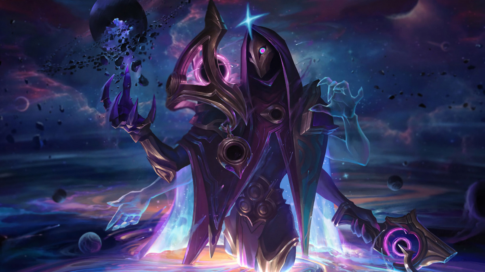
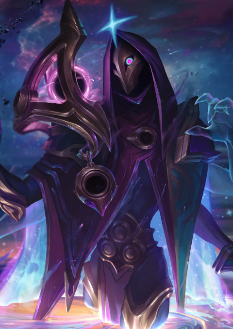
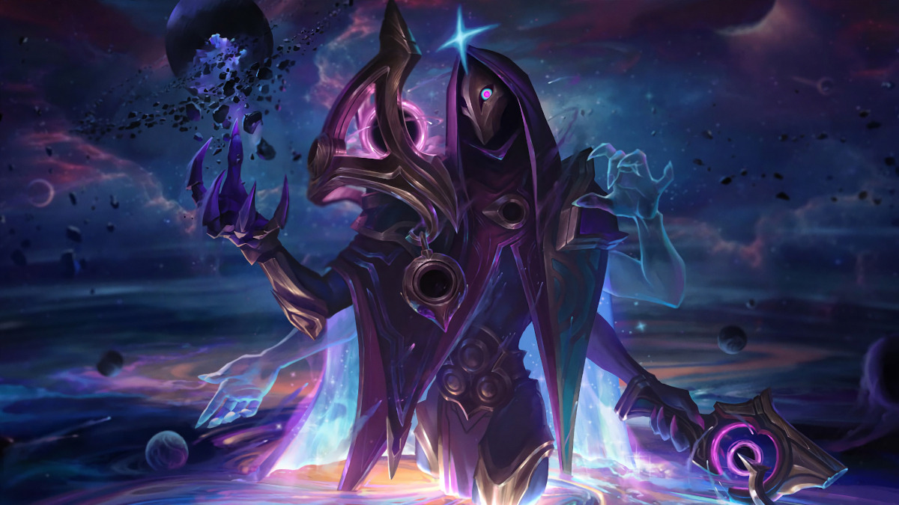
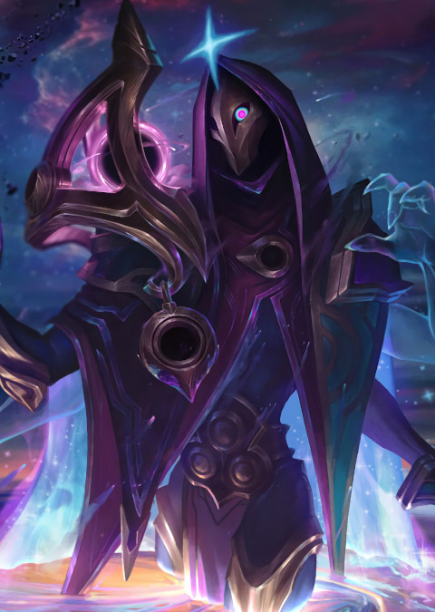
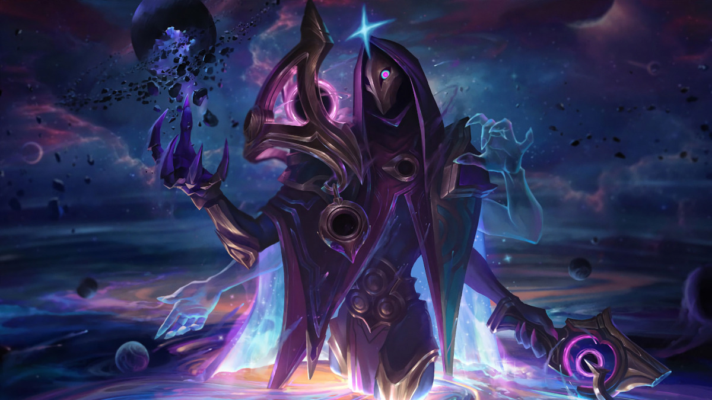
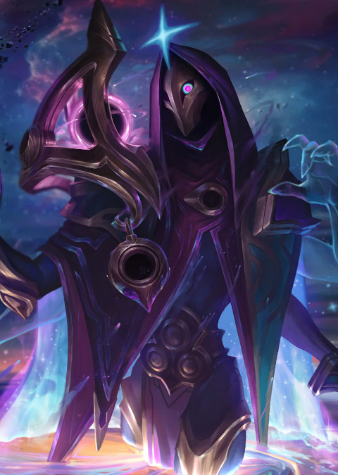
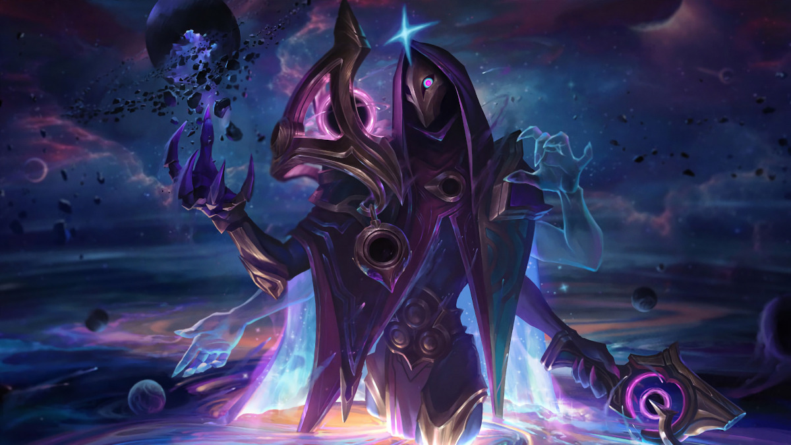
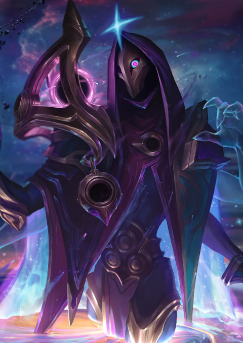

Cette série de pages est dédiée à la présentation de mes trois personnages principales sur League of legends. Cette page sera dédiée à Jhin, le personnage que j'aime le plus jouer en bot. Tout d'abord, les abilités du personnage seront présentées puis, quelques statistiques pour finir avec un carrousel de quelques une des apparences supplémentaires.
Le pistolet de Jhin, Murmure, est un instrument de précision capable d'infliger de lourds dégâts. Sa cadence de tir est fixe et il ne peut tirer que quatre balles avant de devoir être rechargé. Jhin insuffle à la dernière balle un soupçon de magie noire qui lui permet de toujours infliger un coup critique et des dégâts supplémentaires. Quand Murmure inflige un coup critique, Jhin reçoit un bonus en vitesse de déplacement.
Jhin lance une bombe magique sur un ennemi. Elle peut toucher jusqu'à quatre cibles et ses dégâts augmentent après chaque coup fatal.
Jhin brandit sa canne et tire une unique balle à très longue portée. Elle transperce les sbires et les monstres, mais s'arrête au premier champion touché. Si la cible avait récemment été blessée par Jhin ou touchée par les alliés de Jhin ou un piège-lotus, elle est immobilisée.
Jhin pose un piège-lotus invisible qui fleurit quand un ennemi marche dessus. Il ralentit les ennemis proches avant de leur infliger des dégâts dans une explosion de pétales lacérants.
Beauté dans la mort : Quand Jhin tue un champion ennemi, un piège-lotus fleurit près de son cadavre.
Après une canalisation, Jhin transforme Murmure en méga-canon d'épaule. Il peut alors tirer 4 super balles à très longue portée qui transpercent les sbires et les monstres, mais s'arrêtent au premier champion touché. Murmure estropie les ennemis touchés, ce qui les ralentit et leur inflige des dégâts supplémentaires. Le 4e tir est parfaitement calibré et puissant, et il inflige toujours un coup critique.